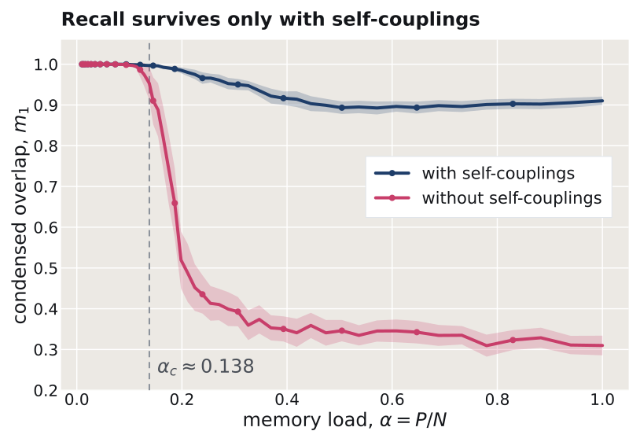
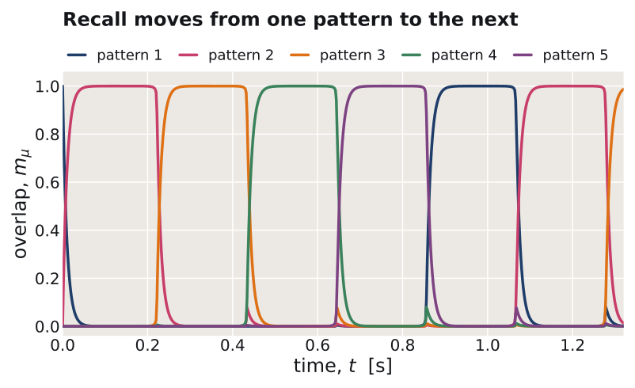
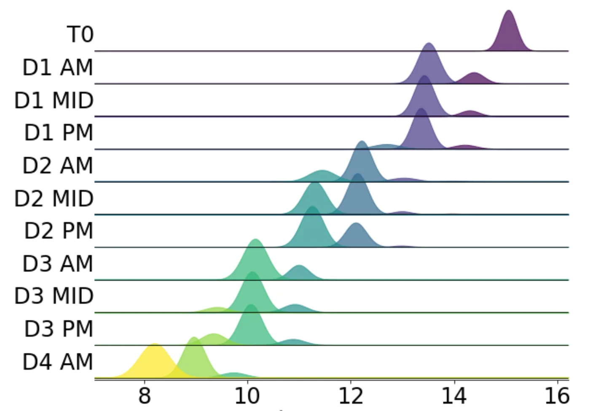
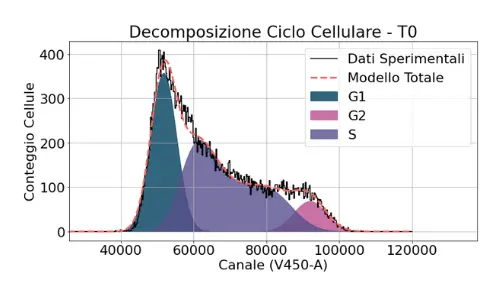
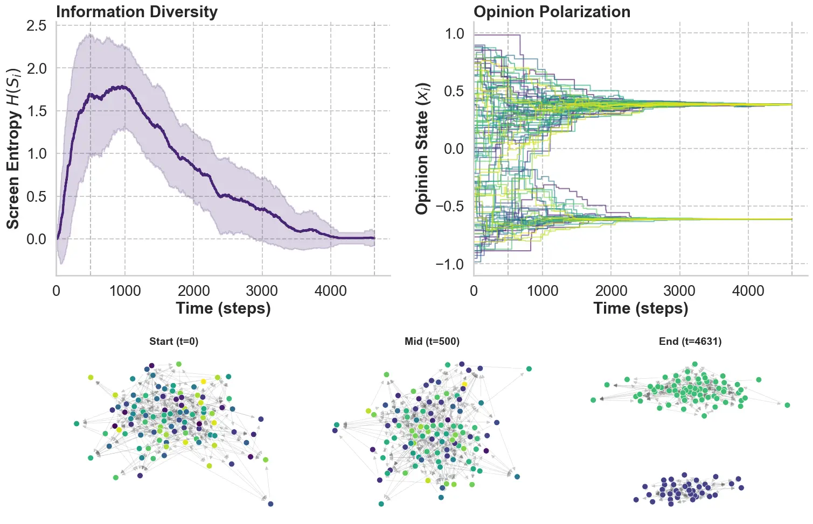

About me
I'm a Master's student in Physics at Sapienza University of Rome. I'm mostly interested in statistical physics, due to its extraordinary ability to explain such a rich and diverse range of phenomena. It gives you the power to understand complex physical problems as well as everyday situations, such as the way a big crowd moves after a concert. Moreover, it gives you the chance to work at the intersection of different fields, with people from completely different backgrounds. My ambition is to work in a stimulating interdisciplinary environment, with people I can learn new things from on a daily basis.
Right now I'm writing my thesis at the Istituto Superiore di Sanità, supervised by Dr. Maurizio Mattia, on associative memory in recurrent neural networks. Before that I spent a few months in a biophysics lab at the Italian Institute of Technology (IIT), studying how cells grow and divide.
When I'm not nose-deep in a physics book, I'm usually watching a horror classic like Psycho or Rosemary's Baby. You can also often find me with my headphones on, listening to The Smiths.
Education
M.Sc. in Physics
Sapienza University of Rome · Oct 2024 – Mar 2027 (expected)
In my Master's thesis, supervised by Dr. Maurizio Mattia at the Istituto Superiore di Sanità, I'm studying how recurrent neural networks store and recall memories, combining analytical tools from statistical mechanics with numerical simulations.
Relevant courses: Statistical Mechanics and Critical Phenomena, Non-Equilibrium Statistical Mechanics, Statistical Mechanics of Disordered Systems, Theoretical Biophysics, Neural Networks, Physics of Complex Systems, Nonlinear Waves and Solitons, Mathematical Physics, Condensed Matter Physics, Introduction to Quantum Field Theory.
B.Sc. in Physics
Sapienza University of Rome · Sep 2021 – Nov 2024
In my Bachelor's thesis, supervised by Prof. Sergio Caprara, I studied two fascinating phenomena of low-temperature physics: Bose–Einstein condensation and the superfluidity of helium-4.
I started from Bose–Einstein statistics and looked at how a system of identical bosons behaves when it is cooled down close to absolute zero. I then focused on superfluidity, taking helium-4 as its most representative case, and described its main features through Tisza's two-fluid model, together with Landau's theory.
Relevant courses: Statistical Mechanics, Mathematical Models and Methods of Physics, Laboratory of Computational Physics, Thermodynamics, Quantum Mechanics, Electromagnetism.
Projects
Associative memory in recurrent neural networks
Master's thesis · Istituto Superiore di Sanità, Rome · July 2026 – present
For my Master's thesis I'm studying an Amari–Hopfield recurrent neural network in which, unlike in the classical model, every neuron is also coupled to itself (autapses). My starting point is a recent paper by Vinci, Galluzzi and Mattia, Beyond catastrophic forgetting in associative networks with self-interactions, which shows that these self-couplings remove the catastrophic forgetting of the standard Hopfield model, where recall breaks down above about 0.14 patterns per neuron. The same self-couplings also make the dynamics of the whole network reduce exactly to a closed set of equations for its overlaps with the stored patterns.
In my work I'm taking this model further by adding an asymmetric matrix in the style of Sompolinsky and Kanter next to the classic Hebbian one. With the asymmetric couplings, the network does not only recall the stored patterns but can also move from one to the next, producing sequences of memories.
To study the model I draw on the statistical mechanics I learned in several of my university courses, from Ising-like spin systems to phase transitions and mean-field theory. Alongside the analytical work I run simulations in Python, integrating both the full dynamics of the N neurons and the reduced equations for the overlaps.




Cytoplasm partitioning and growth in Jurkat cells
Research internship · Center for Life Nano- & Neuro-Science, Italian Institute of Technology, Rome · March – July 2025
During my internship I joined Dr. Mattia Miotto's group, a mixed team of physicists and biologists, to study how Jurkat cells (a human T-cell leukemia line) grow and divide. The project is about non-genetic heterogeneity, the fact that even genetically identical cancer cells end up different from one another. Part of this comes from how cells control their size and how they share their content between the two daughters at each division.
I took part in the experiments from start to finish. We stained the cytoplasm with a fluorescent dye, CellTrace Yellow, which is shared between the two daughter cells at every division, and used a cell sorter to isolate a narrow starting population. We then measured the cells by flow cytometry three times a day for three days, repeating the whole experiment in two different weeks. At every time point we also fixed part of the sample and stained its DNA with DAPI, to follow the cell cycle.
I then wrote the analysis pipeline in Python. After removing debris and doublets, I separated the generations with a Gaussian mixture model fitted with my own implementation of the expectation–maximization (EM) algorithm, and fitted an asymmetric binomial model to the mean and variance of the dye across generations. For the cell cycle I split each DNA histogram into G1, S and G2 with the Watson Pragmatic model, and used forward scatter as a proxy for cell size. The cytoplasm turned out to be split almost evenly, and the size a cell adds before dividing depends only weakly on its size at birth, the typical sign of an adder-like size control.




Echo chambers from influence and unfollowing
Physics of Complex Systems course · Sapienza University of Rome · 2025/2026
For the Physics of Complex Systems exam I worked on the paper by Sasahara et al., Social influence and unfollowing accelerate the emergence of echo chambers, which studies whether echo chambers can form on a social network without fake news or complex cognitive biases, only from two simple habits: being influenced by posts we agree with, and unfollowing people we disagree with.
In the model each user has an opinion between −1 and 1, sees only the latest posts of the accounts they follow, moves their opinion towards those close enough to it (bounded confidence, with tolerance ε) and can unfollow users whose posts are too far from their own. I rewrote the model in Python from scratch and reproduced most of the paper's results on networks of up to 104 users. As in the paper, the tolerance ε decides whether the network reaches consensus, splits into a few echo chambers or breaks into many small groups.


Physics lecture notes
Personal project · ongoing
I'm turning my lecture notes from my Master's courses into an open-source LaTeX project that anyone can use and contribute to.